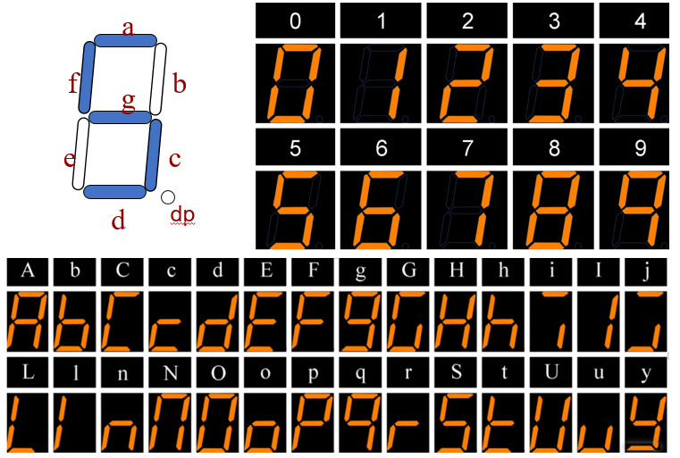
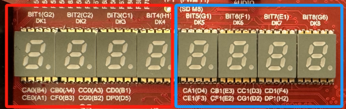

- Digital Logic Lab: Behavioral Modeling and Seven-Segment Displays
Digital Logic Lab: Behavioral Modeling and Seven-Segment Displays
Objectives
- Master behavioral modeling for combinational logic using Verilog
alwaysblocks. - Master the use of
if-elseandcasestatements. - Understand how the seven-segment displays on the EGO1 development board operate.
- Design a BCD-to-seven-segment decoder and verify it on the board.
1. Behavioral Modeling
1.1 What Is Behavioral Modeling?
Behavioral modeling is a higher level of abstraction than structural modeling (connecting basic gates) and dataflow modeling (writing Boolean expressions). Like a high-level programming language such as C, it implements a function by describing the circuit's behavior and algorithm. The synthesis tool automatically infers the underlying logic-gate circuit.
1.2 The always Block for Combinational Logic
In Verilog, behavioral modeling is primarily expressed through always blocks. For combinational logic, use always @(*).
- Syntax:
Verilog
always @(*) begin
// 行为级描述语句 (if-else, case等)
end
-
Key characteristics (common sources of mistakes—remember these):
-
@(*)is the sensitivity list. It means that thealwaysblock is triggered whenever any input signal referenced on the right-hand side of an assignment within the block changes. - A variable assigned on the left-hand side must be declared as type
reg. This is a language requirement. In combinational logic, the synthesized hardware is still a connection rather than a physical register.
1.3 Comparing assign and always @(*)
| Criterion | Dataflow Modeling (assign) |
Behavioral Modeling (always @(*)) |
|---|---|---|
| Assignment target type | Must be wire |
Must be reg |
| Typical use | Simple logic expressions and connections | Complex decisions, multiplexers, and decoders |
| Supported constructs | Conditional operator ? : |
if-else, case, and for loops |
2. Conditional Control Statements
2.1 The if-else Statement
As in C, an if-else statement expresses prioritized conditional logic.
Verilog
always @(*) begin
if (sel == 2'b00) begin
out = a;
end else if (sel == 2'b01) begin
out = b;
end else begin
out = c;
end
end
Important: An
if-elsestatement used for combinational logic must include anelsebranch. Otherwise, the synthesis tool infers an additional latch, which can cause serious timing problems in the implemented hardware.
2.2 The case Statement
A case statement selects among multiple branches and is commonly used in multiplexers, decoders, and state machines. The branches do not have priorities; they are evaluated in parallel.
Verilog
always @(*) begin
case (sel)
2'b00: out = a;
2'b01: out = b;
2'b10: out = c;
2'b11: out = d;
default: out = 1'b0; // 必须加上 default，防止产生 Latch！
endcase
end
Important: A
casestatement must include adefaultbranch. Otherwise, the synthesis tool infers an additional latch, which can cause serious timing problems in the implemented hardware.
3. Seven-Segment Display Operation on the EGO1
3.1 Hardware Principles
A seven-segment display consists of seven bar-shaped light-emitting diodes (LEDs) and one dot-shaped LED for the decimal point (DP). Different combinations of illuminated LEDs display the digits 0–9 and selected letters.
According to the EGO1 development board manual, the on-board displays are common-cathode devices and are therefore active high:

3.2 Pin Constraints
The eight seven-segment displays on the EGO1 board are divided into left and right groups, each containing four digits:
- The right group shares segment signals
CA0~CG0andDP0. - The left group shares segment signals
CA1~CG1andDP1. - Each of the eight digits also has an independent digit-select signal, corresponding to
BIT1~BIT8.

Thus, the four digits within a group share the same set of segment-select signals. The independent digit-select signal determines which digit is currently illuminated.
The following tables organize the EGO1 pins related to the seven-segment displays by their labels.
3.2.1 Segment-Select Pins for the Two Groups
| Segment | Right-group label | FPGA pin | Left-group label | FPGA pin |
|---|---|---|---|---|
| a | CA0 |
B4 | CA1 |
D4 |
| b | CB0 |
A4 | CB1 |
E3 |
| c | CC0 |
A3 | CC1 |
D3 |
| d | CD0 |
B1 | CD1 |
F4 |
| e | CE0 |
A1 | CE1 |
F3 |
| f | CF0 |
B3 | CF1 |
E2 |
| g | CG0 |
B2 | CG1 |
D2 |
| dp | DP0 |
D5 | DP1 |
H2 |
The four right-hand digits receive the same CA0~CG0, DP0 segment pattern, while the four left-hand digits receive the same CA1~CG1, DP1 pattern. Therefore, if several digit-select signals within one group are asserted simultaneously, all selected digits display the same content.
Important: The order of the segment-select signals must exactly match the segment order defined in your circuit and bit pattern. If your segment code uses
{a, b, c, d, e, f, g, dp}, connect and assign the signals inCA/CB/CC/CD/CE/CF/CG/DPorder. Mixing up thea~dporder illuminates the wrong segments.
3.2.2 Eight Digit-Select Signals
| Name | Display label | FPGA pin |
|---|---|---|
DN0_K1 |
BIT1 |
G2 |
DN0_K2 |
BIT2 |
C2 |
DN0_K3 |
BIT3 |
C1 |
DN0_K4 |
BIT4 |
H1 |
DN1_K1 |
BIT5 |
G1 |
DN1_K2 |
BIT6 |
F1 |
DN1_K3 |
BIT7 |
E1 |
DN1_K4 |
BIT8 |
G6 |
The four right-hand digits correspond to BIT1~BIT4, and the four left-hand digits correspond to BIT5~BIT8. To illuminate only the rightmost digit in this exercise, assert BIT1.
Illuminating one digit requires two kinds of signals:
-
Segment-select signals (which determine the glyph): A display has seven segments,
a, b, c, d, e, f, g, plus the decimal pointdp. For a common-cathode display, a high level (1) from the FPGA illuminates the corresponding segment. -
Digit-select signals (which determine the active position): Each of the eight digits has an independent select input. A digit displays the pattern currently present on its group's segment lines only when its digit-select signal is set to 1.
In short:
- Segment select controls “what is displayed.”
- Digit select controls “where it is displayed.”
For example, to display 5 on a digit in the right-hand group:
- Drive the segment code for
5onto the right group's segment-select pins. - Set the digit-select signal for the target digit to
1.
If the segment-select signals are set but no digit select is asserted, no digit lights. If multiple digit selects in one group are asserted simultaneously, those digits display the same glyph because they share the same segment-select signals.
3.3 Segment-Code Mapping (Truth Table)
Assume that the seven segments and decimal point are ordered from most significant bit to least significant bit as {a, b, c, d, e, f, g, dp}. To display 0, illuminate a, b, c, d, e, and f, while turning off g and dp. The segment code is therefore 8'b1111_1100.
Examples:
| Displayed character | Binary segment code {a,b,c,d,e,f,g} | Hexadecimal |
|---|---|---|
| 0 | 8'b1111_1100 | 8'hFC |
| 1 | 8'b0110_0000 | 7'h60 |
| 2 | 8'b1101_1010 | 7'hDA |
| 3 | 8'b1111_0010 | 7'hF2 |
| ... | ... | ... |
4. Laboratory Exercise: BCD-to-Seven-Segment Decoder
- Module name:
bcd_to_7seg - Input:
bcd_in(4-bit BCD code in the range 0–9) - Output 1:
seg_out(7-bit segment-select output connected to a~g) - Output 2:
ans_out(8-bit digit-select output connected to BIT1~BIT8) - Function: Use behavioral modeling with a
casestatement to convert a 4-bit BCD code into the corresponding seven-segment pattern. For an invalid input from 10 to 15, turn off all segments. Display the result on the rightmost digit of the EGO1 board.
Step 1: Write the Design
Implement the decoding logic using always @(*) and a case statement.
Tip: In addition to assigning the segment-select output, remember to enable the digit-select signal for the first digit by setting it to 1.
Step 2: Write the Testbench
Use the for loop to generate input stimuli from 0 through 15. Inspect the waveform to determine whether the correct segment code is produced.
Step 3: Assign Pins and Verify the Design on the Board
- Bind
bcd_into four slide switches on the EGO1 development board (see SW0~SW3 in the manual). - Bind the seven bits of
seg_outto the corresponding segment pins of the right-hand display group (see CA0~CG0 in the manual). - Bind the eight bits of
ans_outto the digit-select pins (see BIT8~BIT1 in the manual). - Synthesize the design, generate and download the bitstream, then toggle the switches and observe the displayed digit.
Question: What changes would you make to the code to display hexadecimal digits A–F in addition to 0–9?
Appendix: Frequently Asked Questions
- Q: The code and pin assignments appear correct, but the rightmost display does not light. Why? A: Check that the segment-select signals are bound to the pins for the right-hand group and that the digit-select signal corresponding to the rightmost digit is set to 1.